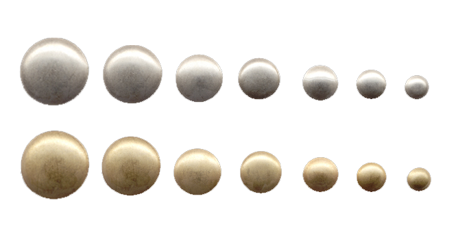

The following designs are shown in nickel silver and brass as well. When ordering, specify metal, backing and finish. Standard finishes are: matt, buff, or antique. For shiny finish, add 10¢. Standard backings are: loops, shanks and 7mm rivets. For other rivet sizes, call for pricing. For specialty backings such as Chicago screws or snaps click HERE for details.
